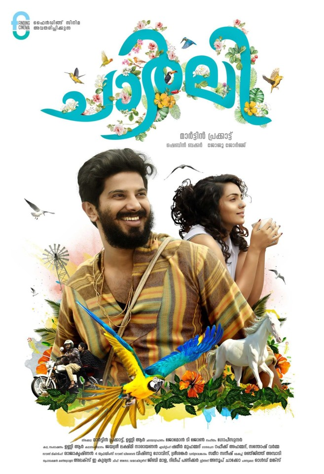
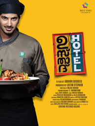
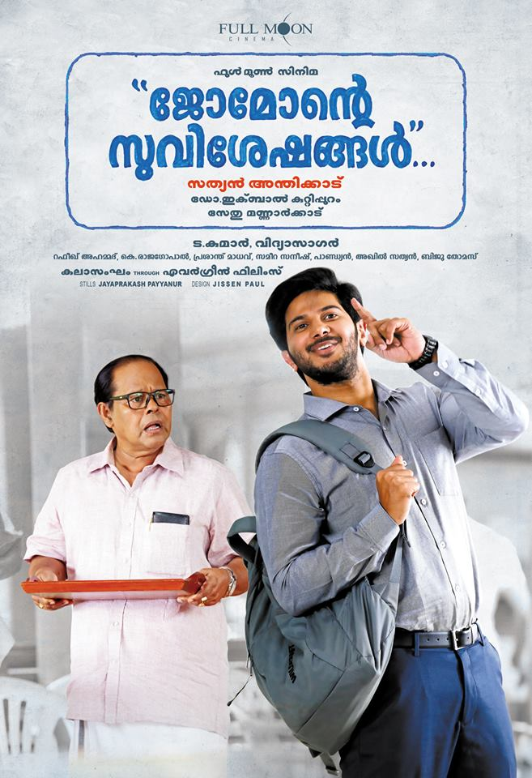

SPOTSTAR - DULQUER SALMAAN

Dulquer Salmaan is one of the most versatile and popular actors in Indian cinema today. Born on July 28, 1986, he is the son of legendary Malayalam actor Mammootty. Though he began his career in Malayalam films, Dulquer quickly expanded his presence into Tamil, Telugu, and Hindi cinema, earning fans across the country. He made his debut with the film Second Show in 2012, which immediately marked him as a promising talent. Known for his charming screen presence and natural acting style, Dulquer has played a wide range of roles, from romantic leads to intense character-driven performances. His performances in films like Ustad Hotel, Bangalore Days, Charlie, and Mahanati have received both critical and commercial acclaim. Apart from acting, he is also involved in film production and owns the production house Wayfarer Films. Dulquer's effortless ability to switch between languages and genres has made him a pan-Indian star. He is admired not just for his acting skills but also for his humility, fashion sense, and off-screen persona. His calm demeanor and dedication to cinema have earned him respect in the industry. Despite being a star kid, he carved his own path and has consistently proven his talent. Dulquer continues to be a favorite among the youth and is considered one of the leading actors of his generation.
POPULAR FILMS




